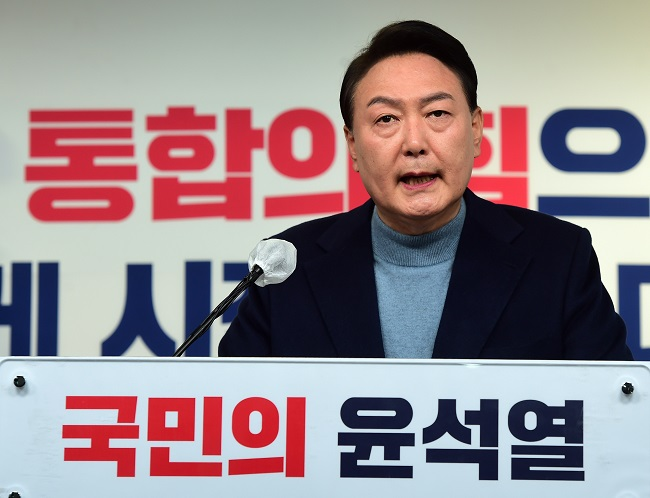

- 검수완박
- 8회 지방선거
- 윤석열 정부
윤석열 정부
윤석열 정부는 2022년 3월 9일 제20대 대통령 선거에서 당선된 윤석열 제20대 대통령 당선인이 이끌 대한민국 정부이다.

주요 공약 사항
- 코로나 극복 긴급 구조 및 포스트 코로나 플랜
- 지속가능한 좋은 일자리 창출
- 수요에 부응하는 주택 250만 호 이상 공급
- 스마트, 공정하게 봉사하는 ‘디지털 플랫폼 정부’구현과 대통령실 개혁
- 과학 기술 추격 국가에서 원천 기술 선도 국가로
- 출산 준비부터 산후 조리·양육까지 국가 책임 강화
- 청년이 내일을 꿈꾸고 국민이 공감하는 공정한 사회-여성가족부 폐지
- 당당한 외교, 튼튼한 안보
- 실현 가능한 탄소중립과 원전 최강국 건설
- 공정한 교육과 미래 인재 육성, 모두가 누리는 문화복지